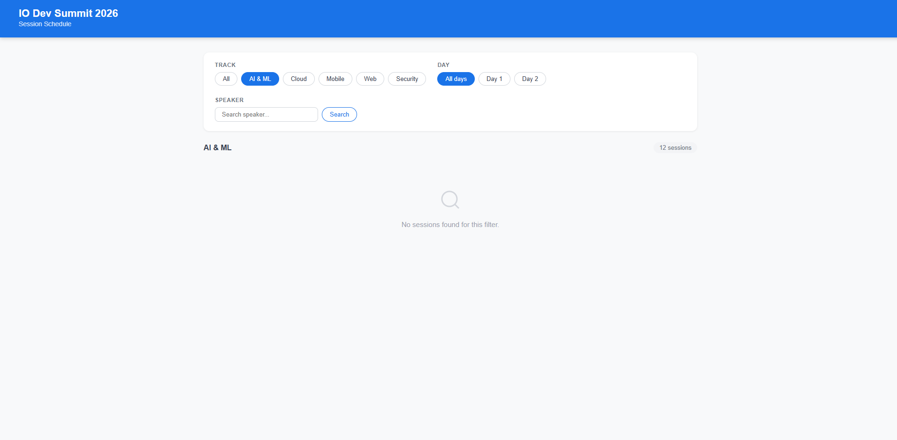
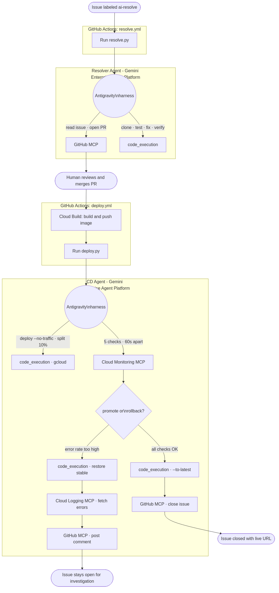
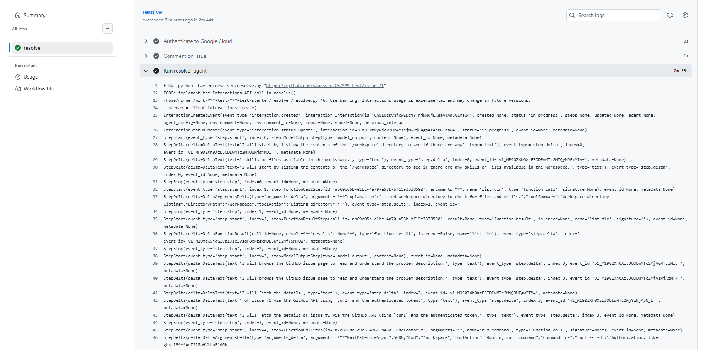
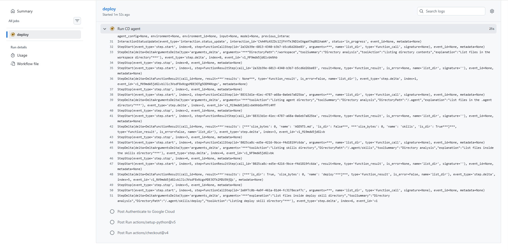
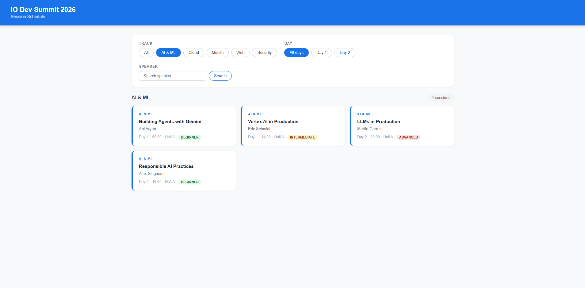

About this codelab
In this codelab you will build a GitHub Issue Resolver: a system that autonomously resolves GitHub issues and deploys fixes to Cloud Run, driven entirely by the Managed Agents API on Gemini Enterprise Agent Platform.
Label any issue ai-resolve. A managed agent reads the issue via GitHub MCP, clones the repo, reproduces the failure, fixes the bug, runs the tests, and opens a PR. When you merge the PR, a second managed agent deploys the fix to Cloud Run using canary traffic splitting, monitors error rates via Cloud Monitoring MCP, then promotes or rolls back automatically.
No orchestration framework. No LLM wrappers. No custom sandboxes. The platform provisions the sandbox, runs the model, executes code, and streams results. You bring two AGENTS.md files, two SKILL.md files, two Python scripts, and three hosted MCP servers.
background=True, stream=True, and store=True.gcloud CLI and gh CLI installed and authenticateduv installedFor this codelab you'll use Cloud Shell or your local terminal. By the end of this step you'll have the repo cloned, your GCP project configured, all required APIs enabled, a .env file filled in, a service account created, and GitHub secrets set.
Cloud Shell is a free browser-based Linux terminal with gcloud, git, gh, uv, and Python pre-installed. You don't need to install anything locally to complete this codelab.
To open Cloud Shell, click the terminal icon in the top-right toolbar of the GCP Console. When prompted, click Authorize to allow Cloud Shell to make Google Cloud API calls.
This codelab uses a GitHub template repository. You get your own ready-to-run copy with one click — no branch gymnastics required.
github-issue-resolver, select Public, click Create repositorygh auth login
REPO=$(gh api user --jq '.login')/github-issue-resolver
git clone https://github.com/$REPO.git
cd github-issue-resolver
gcloud auth login
gcloud auth application-default login
Then set your project:
export PROJECT_ID=$(gcloud config get-value project)
export REGION="us-central1"
echo "Project: $PROJECT_ID"
Expected output:
Project: my-project-123
gcloud services enable \
aiplatform.googleapis.com \
run.googleapis.com \
cloudbuild.googleapis.com \
artifactregistry.googleapis.com \
monitoring.googleapis.com \
logging.googleapis.com \
storage.googleapis.com \
--project $PROJECT_ID
This takes about 1 minute. You'll see Operation finished successfully when done.
Both placeholder values contain your-project-id, so one sed command fills them both using the PROJECT_ID variable you set above:
cp .env.example .env
sed -i "s/your-project-id/$PROJECT_ID/g" .env
Verify:
cat .env
Expected output:
GOOGLE_CLOUD_PROJECT=my-project-123
GCS_SKILLS_BUCKET=managed-issue-resolver-skills-my-project-123
CLOUD_RUN_REGION=us-central1
CLOUD_RUN_SERVICE=target-app
Install Python dependencies:
uv sync
The GitHub Actions workflows need GCP credentials to call the Managed Agents API, build Docker images, and deploy to Cloud Run. Create a dedicated service account with the exact roles needed:
PROJECT_ID=$(grep GOOGLE_CLOUD_PROJECT .env | cut -d= -f2)
SA=managed-issue-resolver@$PROJECT_ID.iam.gserviceaccount.com
gcloud iam service-accounts create managed-issue-resolver \
--display-name="Managed Issue Resolver" \
--project=$PROJECT_ID
Assign roles:
for ROLE in \
roles/aiplatform.user \
roles/run.admin \
roles/cloudbuild.builds.editor \
roles/artifactregistry.writer \
roles/storage.admin \
roles/storage.objectViewer \
roles/mcp.toolUser \
roles/monitoring.admin \
roles/logging.admin \
roles/logging.viewer \
roles/serviceusage.serviceUsageConsumer \
roles/iam.serviceAccountUser; do
gcloud projects add-iam-policy-binding $PROJECT_ID \
--member="serviceAccount:$SA" \
--role="$ROLE" --quiet
done
Download the key:
gcloud iam service-accounts keys create sa-key.json \
--iam-account=$SA --project=$PROJECT_ID
The workflows read secrets from the repository. Add them before the first run:
PROJECT_ID=$(grep GOOGLE_CLOUD_PROJECT .env | cut -d= -f2)
REPO=$(gh api user --jq '.login')/github-issue-resolver
gh secret set GCP_SA_KEY --repo "$REPO" < sa-key.json
gh secret set GCP_PROJECT_ID --body "$PROJECT_ID" --repo "$REPO"
gh secret set CLOUD_RUN_REGION --body "us-central1" --repo "$REPO"
Then delete the local key file:
rm sa-key.json
GITHUB_TOKEN is provided automatically by GitHub Actions (no action needed).
The secrets RESOLVER_AGENT_ID and CD_AGENT_ID will be added in the next steps after the agents are created.
Before writing any agent code, deploy the app and see the bugs for yourself.
The target app is a conference session browser — 12 sessions across 5 tracks (AI & ML, Cloud, Mobile, Web, Security) over 2 days. It has four seeded bugs, all in utils.py:
Bug | Symptom | Root cause |
Filter by track | Clicking any track filter returns an empty list | Input normalised to |
Filter by day | Filtering by Day 1 or Day 2 returns nothing | Day param arrives as string |
Speaker search |
| Case-sensitive comparison |
Session count | The count badge shows the wrong number | Counts all sessions instead of the filtered subset |
Create an Artifact Registry repository for Docker images:
PROJECT_ID=$(grep GOOGLE_CLOUD_PROJECT .env | cut -d= -f2)
gcloud artifacts repositories create managed-issue-resolver \
--repository-format=docker \
--location=us-central1 \
--project=$PROJECT_ID
Deploy the initial (broken) version to Cloud Run:
gcloud run deploy target-app \
--source target-app/ \
--region us-central1 \
--allow-unauthenticated \
--project=$PROJECT_ID
This takes 2-3 minutes. When complete, you'll see:
Service URL: https://target-app-xxxx.us-central1.run.app
Open the URL in your browser. Click any track filter — notice the session list goes empty. That is bug #1.


Two managed agents handle the full lifecycle:
ai-resolve label: reads the issue, clones the repo, runs tests, fixes utils.py, and opens a PR.You review and merge the PR. Everything else is autonomous.
Before writing any code, let's understand the platform you are building on.
Most LLM APIs give you text-in, text-out: you send a prompt, the model returns a response. That is enough for summarization or Q&A. It is not enough for resolving a GitHub issue - the agent needs to clone a repo, run tests, write files, and open a PR. For that, the model needs real compute.
The Managed Agents API (part of Gemini Enterprise Agent Platform) runs a Gemini model inside a fully provisioned Ubuntu sandbox. The model and the compute environment are co-located: the model can run bash, execute Python, call git, run pytest, and make HTTP requests as part of a single interaction.
Your code (GitHub Actions workflow)
│
│ client.interactions.create(agent="managed-issue-resolver", ...)
▼
Gemini Enterprise Agent Platform
│
├─ provisions sandboxed Ubuntu environment
├─ mounts skill files from GCS at /.agent/
├─ starts Gemini model alongside the compute
│
│ agent reasons → calls bash → runs pytest → edits files → calls GitHub MCP → opens PR
│
└─ streams interaction events back to your workflow
Why not roll your own?
Managed Agents API | Self-hosted (e.g., LangChain + Docker) | |
Infrastructure | Zero - platform provisions on demand | You build, deploy, and scale execution environments |
Sandbox security | Isolated per interaction, auto-cleaned | You manage isolation |
Long-running tasks | Background execution, up to 15 min | You handle timeouts and polling |
MCP integration | Hosted MCP servers passed at call time | You deploy or proxy MCP servers |
SDK | Three lines to invoke | Framework-specific, more code |
The system is split into a control plane and a data plane. This is the most important design concept in the whole codelab.
Agents API (control plane): Creates and configures named agents. Runs once during setup.
client.agents.create(
id="managed-issue-resolver",
base_agent="antigravity-preview-05-2026",
system_instruction=agents_md_content, # who the agent is
tools=[...], # built-in capabilities
base_environment={...}, # GCS skill files + network rules
)
Interactions API (data plane): Invokes a named agent for a specific task. Runs on every workflow trigger.
stream = client.interactions.create(
agent="managed-issue-resolver", # references the named agent by ID
input=prompt, # the task for this run
tools=[github_mcp_server], # per-run tools (GitHub token changes every run)
stream=True, background=True, store=True,
)
The named agent ID is the bridge: created once on the control plane, referenced many times on the data plane. Configuration is registered once; invocation is lightweight.
The resolver agent needs two files before it can run:
Think of them like two different documents in an operations team:
AGENTS.md | SKILL.md | |
What it defines | Agent identity, role, and constraints | Step-by-step operational procedure |
Written by | Security and compliance teams | Operations teams |
Stored where | GCS, mounted at | GCS, mounted at |
Also passed as |
| (mounted file only) |
Update path | Upload new GCS file, recreate agent | Upload new GCS file, recreate agent |
Put in AGENTS.md anything that defines what the agent IS and what it MUST NOT do:
target-app/")Put in SKILL.md anything that defines HOW to do a specific task:
cloudshell edit starter/target-app/.agents/AGENTS.md
You'll see a comment for the ## Rules section. The persona is already filled in.
The rules exist to prevent failure modes that are specific to unrestricted code execution. Without them the agent might: create helper files instead of editing the broken one, patch a symptom without fixing the root cause, or open a PR while tests still fail.
Each rule maps to one real failure mode:
Rule | What failure it prevents |
Never create new files to apply a fix | Keeps the PR diff minimal; helper files leave the root cause in place |
Never fix a symptom, fix the root cause | Prevents editing test assertions to match wrong behavior |
Tests must all pass before opening a PR | Hard quality gate - the agent iterates, not you |
Do not refactor anything unrelated to the issue | One PR, one fix - clean and reviewable history |
If you cannot locate the bug, describe what you found and stop | Fail-safe against silent partial fixes |
Replace the comment with:
- Never create new files to apply a fix. Edit the file that contains the bug.
- Never fix a symptom when you can fix the root cause.
- If tests pass before your change, they must all pass after it too.
- Do not add comments unless the fix is genuinely non-obvious.
- Do not refactor, rename, or clean up anything unrelated to the issue.
- If you cannot confidently locate the bug after exploring the codebase, open a PR describing what you found and stop - do not guess.
Compare your file with target-app/.agents/AGENTS.md when done.
cloudshell edit "starter/target-app/.agents/skills/fix-issue/SKILL.md"
You'll see two comment blocks: one for ## Workflow and one for ## Critical rules. The trigger and tools sections at the top are already filled in.
The workflow gives the agent a step-by-step runbook for this class of task. Steps 1-3 are orientation before action: the agent must understand the codebase before it touches anything. Step 4 establishes a failure baseline so the agent verifies its fix addresses exactly the right behavior. Step 8 includes the git config lines that are critical: the managed sandbox starts with no git identity configured, and git commit fails without them.
Replace the comment inside ## Workflow with:
1. Read the issue using the GitHub MCP server to get the title, body, and number.
2. Clone the repository and read its structure:
```bash
git clone <auth_repo_url> /workspace/repo
cd /workspace/repo && ls -la
```
3. Install dependencies (check for `requirements.txt`, `package.json`, `pyproject.toml`).
4. Run the existing tests to see the current failure baseline.
5. Diagnose the issue using the symptom-to-location playbook.
6. Write the fix. Change only the code that causes the reported behavior.
7. Run the tests again. If any fail, iterate. Do not open a PR until all pass.
8. Commit and push:
```bash
git config user.email "agent@managed-agents.dev"
git config user.name "Issue Resolver Agent"
git checkout -b fix/issue-<ISSUE_NUMBER>
git add -A
git commit -m "fix: <description> (closes #<ISSUE_NUMBER>)"
git push origin fix/issue-<ISSUE_NUMBER>
```
9. Open a PR via GitHub MCP. Post a comment on the issue with the PR URL.
Replace the comment inside ## Critical rules with:
- **MANDATORY: run the full test suite before opening a PR.**
- **Do NOT create new files to apply a fix.**
- **Do NOT open a PR if any tests fail.** Iterate until they pass.
Compare your file with target-app/.agents/skills/fix-issue/SKILL.md when done.
The CD agent deploys the fix to Cloud Run using canary traffic splitting, monitors error rates for 5 minutes, then promotes or rolls back automatically. Like the resolver, it needs an AGENTS.md and a SKILL.md.
The CD agent has code execution and network access. Without explicit rules it would make unsafe deployment decisions:
Rule | What failure it prevents |
Always record the stable revision before deploying | Rollback is impossible without it - Cloud Run has no "undo" for traffic splits |
Never use | Log ingestion has 30-90 second delay and no denominator - logs cannot compute error rate |
Never close the issue on rollback | The fix did not reach production - closing signals false success to the team |
If no linked issue found in PR, skip GitHub steps | Not every PR has an issue reference; the agent should still complete the deploy |
cloudshell edit starter/cd-agent/AGENTS.md
The persona and 6-step high-level workflow are pre-filled. You'll see a comment for the ## Rules section.
Replace the comment with:
- Always record the stable revision before deploying. Rollback is impossible without it.
- Never use `gcloud logging read` for health decisions. Use Cloud Monitoring MCP for metrics.
- Never close the issue on rollback. The fix did not reach production.
- If no linked issue is found in the PR body, skip the GitHub steps entirely.
Compare your file with cd-agent/AGENTS.md when done.
The SKILL.md for the CD agent defines the full canary deploy workflow, including the verdict table the agent applies at each monitoring check:
Condition | Verdict |
| HOLD (not enough traffic yet - denominator too small) |
| ROLLBACK |
| OK |
Two consecutive HOLDs | ROLLBACK (no traffic reaching canary) |
The agent runs 5 checks, 60 seconds apart. ROLLBACK triggers immediately on any check. Promotion requires all 5 checks to pass.
Why
canary_total < 5
(HOLD)? A denominator guard. If only 2 requests have reached the canary, one error gives a 50% error rate - statistical noise, not a real failure. HOLD prevents false ROLLBACKs on a quiet canary window.
Why
canary_error_rate > 0.05 AND > stable_error_rate * 2
? Both conditions must be true. A 3% canary error rate is acceptable if the stable revision is also running at 2% - that is a shared infrastructure issue, not a regression. Requiring 2x stable as the threshold filters out baseline noise.
Why
--to-latest
on promotion? If you use --to-revisions NEW_REV=100, Cloud Run enters "manual traffic mode." Future deployments create new revisions but get no traffic until you manually update the traffic config. --to-latest keeps the service in automatic mode where each new deploy automatically becomes active.
cloudshell edit starter/cd-agent/SKILL.md
The trigger and tools sections are pre-filled. You'll see two comment blocks: one for ## Steps and one for ## Critical rules.
The 12-step workflow covers: authenticate, record stable revision, deploy with --no-traffic, get new revision name, split traffic at 10%, run the monitoring loop with the verdict table, promote or roll back, get the service URL, extract the issue number from the PR body, and post the result.
Replace the comment inside ## Steps with:
1. **Authenticate gcloud** using the access token from the prompt:
```bash
export CLOUDSDK_AUTH_ACCESS_TOKEN=<token_from_prompt>
```
2. **Record the stable revision** before any change:
```bash
gcloud run revisions list --service <SERVICE> --region <REGION> --project <PROJECT> \
--format="value(REVISION)" --limit=1
```
Save this as STABLE_REV. This is the rollback target.
3. **Deploy the new image with no traffic**:
```bash
gcloud run deploy <SERVICE> \
--image <IMAGE_URL> \
--region <REGION> --project <PROJECT> \
--no-traffic --quiet
```
4. **Get the new revision name**:
```bash
gcloud run revisions list --service <SERVICE> --region <REGION> --project <PROJECT> \
--format="value(REVISION)" --limit=1
```
Save this as NEW_REV.
5. **Split traffic at 10%**:
```bash
gcloud run services update-traffic <SERVICE> \
--region <REGION> --project <PROJECT> \
--to-revisions NEW_REV=10,STABLE_REV=90
```
6. **Monitoring loop** - run 5 checks, 60 seconds apart, using Cloud Monitoring MCP:
- Query `run.googleapis.com/request_count` for the last 2 minutes, grouped by `response_code_class`
- Compute canary_error_rate and stable_error_rate from 5xx vs total
- Apply the verdict table:
| Condition | Verdict |
|---|---|
| canary_total < 5 | HOLD |
| canary_error_rate > 0.05 AND > stable_error_rate * 2 | ROLLBACK |
| canary_error_rate <= 0.05 | OK |
| Two consecutive HOLDs | ROLLBACK |
Stop immediately on ROLLBACK. Proceed to step 7 after all 5 checks pass as OK.
7. **Promote** (all checks OK):
```bash
gcloud run services update-traffic <SERVICE> --region <REGION> --project <PROJECT> --to-latest
```
**Or rollback** (any ROLLBACK verdict):
```bash
gcloud run services update-traffic <SERVICE> --region <REGION> --project <PROJECT> \
--to-revisions STABLE_REV=100
```
8. **Get the service URL**:
```bash
gcloud run services describe <SERVICE> --region <REGION> --project <PROJECT> \
--format="value(status.url)"
```
9. **Find the linked issue number** from the PR body: look for "Closes #N" or "Fixes #N".
10. **On success**: post a comment on the issue with the revision name and live URL, then close the issue via GitHub MCP.
11. **On rollback**: use Cloud Logging MCP to fetch the top 5 recent error log entries for the service.
Post a comment on the issue with the error rate, rollback reason, and log entries. Do NOT close the issue.
12. If no linked issue is found, skip GitHub steps - the deployment result is complete.
Replace the comment inside ## Critical rules with:
- **Always record STABLE_REV before step 3.** Rollback is impossible without it.
- **Never use Cloud Logging for the promote/rollback decision.** Use Cloud Monitoring MCP only.
- **Never close the issue on rollback.** The fix did not reach production.
Compare your file with cd-agent/SKILL.md when done.
You have the agent files. Now you'll upload them to GCS and register the two named agents on Gemini Enterprise Agent Platform.
Every managed agent runs on the Antigravity harness - the execution engine that powers Gemini Enterprise Agent Platform. The base_agent field in client.agents.create() pins the harness version:
client.agents.create(
id="managed-issue-resolver",
base_agent="antigravity-preview-05-2026", # pins the harness version
...
)
The harness ships a full Ubuntu environment pre-installed with everything the agent needs:
Software | Version |
Python | 3.11 |
Node.js | 20 |
gcloud CLI | Latest |
git, curl, jq, pytest, pip | Latest |
ripgrep, fd, tree | Latest |
Built-in tools are activated at agent creation and cannot be changed without recreating the agent:
Tool type | What the agent gains |
| Run bash and Python with stdout/stderr capture |
| Web search from inside the sandbox |
| Fetch and read web pages |
Network access is disabled by default. Our project uses {"domain": "*"} to permit all outbound connections (required for git clone, git push, and MCP calls). In production, replace * with specific domains to enforce a tight egress policy.
Both AGENTS.md and SKILL.md files are stored in GCS and mounted into the sandbox at /.agent/. Create the bucket and upload all files:
PROJECT_ID=$(grep GOOGLE_CLOUD_PROJECT .env | cut -d= -f2)
GCS_SKILLS_BUCKET=$(grep GCS_SKILLS_BUCKET .env | cut -d= -f2)
gcloud storage buckets create gs://$GCS_SKILLS_BUCKET \
--location=us-central1 \
--project=$PROJECT_ID
Upload all AGENTS.md and SKILL.md files:
bash setup/upload_skills.sh
Expected output:
Uploading agent-home directories to gs://managed-issue-resolver-skills-my-project ...
(agent-home/ contains AGENTS.md + skills/ - single mount at /.agent)
[gsutil copy output]
Uploaded:
gs://managed-issue-resolver-skills-my-project/cd-agent/agent-home/AGENTS.md
gs://managed-issue-resolver-skills-my-project/cd-agent/agent-home/skills/deploy/SKILL.md
gs://managed-issue-resolver-skills-my-project/resolver/agent-home/AGENTS.md
gs://managed-issue-resolver-skills-my-project/resolver/agent-home/skills/fix-issue/SKILL.md
Note: recreate agents after changing SKILL.md or AGENTS.md files:
uv run python starter/setup/create_agents.py
cloudshell edit starter/setup/create_agents.py
The client initialization, file reads, function signature, and polling loop are pre-filled. You'll see three # TODO comments inside the client.agents.create() call. Work through them in order.
system_instructionThe system_instruction variable is already read from the AGENTS.md file at the top of the file. Pass it directly to the API:
system_instruction=system_instruction,
This is stored in the agent definition on the control plane and applied before every interaction. It is the same content that upload_skills.sh uploads to GCS at /.agent/AGENTS.md - both paths carry the same text. The parameter is stored at agent creation; the GCS file is read at runtime by the harness.
tools listBuilt-in tool capabilities are activated at agent creation time and cannot be added later without recreating the agent:
tools=[
{"type": "code_execution"},
{"type": "google_search"},
{"type": "url_context"},
],
code_execution gives the agent a full bash and Python environment - git, pytest, pip, and all standard Unix tools. Without this, the agent can only produce text; it cannot run any commands.
google_search allows the agent to search the web. The resolver does not use it for the fix workflow, but it is available if the agent needs to look up an error message it encounters.
url_context lets the agent fetch and read the content at a URL. Useful if the issue body contains a link to a relevant doc or stack trace.
base_environmentThe base environment defines the sandbox and what files are pre-loaded when it starts:
base_environment={
"type": "remote",
"sources": [
{
"type": "gcs",
"source": f"gs://{GCS_SKILLS_BUCKET}/{agent_home_gcs_prefix}",
"target": "/.agent",
}
],
"network": {"allowlist": [{"domain": "*"}]},
},
"type": "remote" - a managed hosted sandbox provisioned by the platform. The agent does not run locally.
"source": f"gs://.../{agent_home_gcs_prefix}" - the GCS prefix is mounted as a directory, not a single file. Everything under resolver/agent-home/ lands at /.agent/ in the sandbox: AGENTS.md at /.agent/AGENTS.md and the skill at /.agent/skills/fix-issue/SKILL.md. This is why both files must share one GCS prefix - the API rejects two sources that would share the same top-level target directory.
"target": "/.agent" - the Antigravity harness auto-discovers /.agent/AGENTS.md as the runtime system instruction and loads skill files from /.agent/skills/.
"network": {"allowlist": [{"domain": "*"}]} - network access is disabled by default. The * allowlist enables all outbound connections - required for git clone, git push, and the GitHub MCP server.
Your file is ready to run. Verify it by registering the agents in the next step.
Run your completed starter file to register both named agents on Gemini Enterprise Agent Platform:
uv run python starter/setup/create_agents.py
The script prints the gh secret set commands for both agent IDs. Run them:
REPO=$(gh api user --jq '.login')/github-issue-resolver
gh secret set RESOLVER_AGENT_ID --body "managed-issue-resolver" --repo "$REPO"
gh secret set CD_AGENT_ID --body "managed-issue-cd" --repo "$REPO"
Run the smoke test before triggering any workflow:
uv run python setup/test_agents.py
Expected output:
Testing: managed-issue-resolver
Prompt: Say hello and confirm you can access the GitHub MCP server.
interaction.created
PASS: agent initialized and completed successfully
Testing: managed-issue-cd
Prompt: Say hello and confirm you can access the GitHub, Cloud Monitoring, and Cloud Logging MCP servers.
interaction.created
PASS: agent initialized and completed successfully
========================================
All agents OK. Ready to trigger the workflow.
The resolver workflow fires when a GitHub issue gets the ai-resolve label. The workflow calls resolve.py, which invokes the resolver agent via the Interactions API. Let's write that script.
The Interactions API is the data plane: it invokes a named agent for a specific task. Three parameters make it suitable for long-running agent tasks:
Parameter | Why this project uses it |
| Agent tasks run up to 15 minutes; this prevents the GitHub Actions step from timing out while waiting |
| Yields live events (text chunks, tool calls, tool results) so the workflow log shows progress in real time |
| Persists the interaction so a follow-up call can resume it via |
The prompt carries only what changes per invocation. Everything the agent needs to know about HOW to do the work is already in SKILL.md, mounted in the sandbox. You author the playbook once, not embed it in every call.
Hosted MCP servers expose APIs as agent-callable tools. Google and GitHub host MCP servers for their APIs
This project uses three hosted MCP servers:
Server | URL | Used by |
GitHub |
| Both agents: read issues, open PRs, post comments |
Cloud Monitoring |
| CD agent: query error rates during canary window |
Cloud Logging |
| CD agent: fetch error logs on rollback |
MCP servers are passed at interaction time via the tools parameter because auth tokens change per run:
stream = client.interactions.create(
agent=AGENT_ID,
input=prompt,
tools=[
{
"type": "mcp_server",
"url": "https://api.githubcopilot.com/mcp/",
"headers": {
"Authorization": f"Bearer {GH_TOKEN}",
"X-MCP-Exclude-Tools": "delete_file",
},
},
],
...
)
cloudshell edit starter/resolver/resolve.py
The imports, environment variable reads, and client initialization are pre-filled. You'll see two # TODO comments inside the resolve() function. Work through them in order.
The agent needs two pieces of information to start: the issue URL (to read it via GitHub MCP) and an authenticated clone URL (to git clone and git push without an interactive auth prompt).
Find the # TODO 1 comment and replace it with:
auth_repo_url = REPO_URL.replace("https://", f"https://x-access-token:{GH_TOKEN}@")
prompt = (
f"Resolve this GitHub issue: {issue_url}\n"
f"Repository clone URL (authenticated): {auth_repo_url}\n\n"
f"Use the GitHub MCP server to read the issue and open the PR. "
f"Use the authenticated clone URL for git clone and git push."
)
x-access-token:{GH_TOKEN}@ is Git's URL-embedded credential format. Placing the token in the URL means git clone and git push authenticate silently. x-access-token is the literal username GitHub expects when using a GITHUB_TOKEN in a URL.
The prompt is minimal by design. It only carries what changes between runs. Everything about HOW to do the work (orientation, test, fix, commit sequence) is already in SKILL.md, mounted at /.agent/skills/fix-issue/SKILL.md in the sandbox.
Find the # TODO 2 comment and replace it with:
stream = client.interactions.create(
agent=RESOLVER_AGENT_ID,
input=prompt,
tools=[
{
"type": "mcp_server",
"url": "https://api.githubcopilot.com/mcp/",
"name": "github",
"headers": {
"Authorization": f"Bearer {GH_TOKEN}",
"X-MCP-Exclude-Tools": "delete_file",
},
},
],
stream=True,
background=True,
store=True,
)
for event in stream:
print(str(event)[:300], flush=True)
print("Agent completed.", flush=True)
agent=RESOLVER_AGENT_ID - the named agent ID. All agent config (system instruction, SKILL.md files, built-in tools) is loaded from the agent definition on the platform; you do not re-pass any of it here.
stream=True yields server-sent events as the agent works. Iterating and printing to stdout sends live agent progress to the GitHub Actions log.
background=True makes the create() call return as soon as the agent starts, not when it finishes. Without this, the SDK blocks for 3-5 minutes while the agent runs and GitHub Actions would hit the step timeout.
store=True persists the interaction so a follow-up call can resume it via previous_interaction_id for multi-turn sessions or retries.
Compare your completed file with resolver/resolve.py when done.
GitHub Actions checks out your repo when it runs. Push resolve.py now so the workflow uses your completed version:
git add starter/resolver/resolve.py
git commit -m "fill in resolve.py"
git push origin main
The resolver workflow fires when a GitHub issue receives the ai-resolve label. Let's trigger it and watch the agent work.
ai-resolve labelREPO=$(gh api user --jq '.login')/github-issue-resolver
gh label create ai-resolve --color "0075ca" --description "Trigger AI issue resolution" --repo "$REPO"
gh issue create \
--title "Track filter returns no sessions" \
--body "When clicking any track filter (AI & ML, Cloud, Mobile, etc.) the session list becomes empty. All sessions disappear regardless of which track is selected.
Expected: only sessions matching the selected track should appear.
Bug is in \`target-app/utils.py\`." \
--label "ai-resolve" \
--repo "$REPO"
The ai-resolve label triggers the workflow immediately.
gh run watch --repo "$REPO"
You'll see the GitHub Actions run progress through these steps:
✓ Checkout
✓ Set up Python
✓ Install dependencies
✓ Authenticate to Google Cloud
✓ Comment on issue
● Run resolver agent <- agent is working here
The "Comment on issue" step posts a message to the issue: "Agent is working on this. A PR will appear here when the fix is ready."

While the workflow is running, the resolver agent is executing inside a hosted sandbox, following the SKILL.md playbook you wrote:
requirements.txtutils.py and finds the root causes: filter_by_track normalizes "AI & ML" to "ai-and-ml" but sessions store "AI & ML"filter_by_day compares string "1" to integer 1 (never equal)search_by_speaker uses case-sensitive in operatorsession_count counts from the full list instead of the filtered subsetutils.pyfix/issue-1 and opens a PR via GitHub MCPThe resolver agent is running and will take 3-5 minutes. Use that time to write deploy.py — the script the CD workflow calls with the PR URL and the pre-built image URL after Cloud Build completes.
The CD agent uses three MCP servers, each at a different stage of the deployment:
MCP server | When the agent uses it | Why not bash |
GitHub | Read PR body (extract issue number), post comment, close issue | GitHub API calls need auth - MCP injects it |
Cloud Monitoring | Every 60-second health check during the canary window | Returns aggregated metrics with a denominator; |
Cloud Logging | Only on rollback, to read the actual error messages | Gives the rollback comment its specific failure details |
Why the GCP token is fetched at runtime, not stored in the agent: The access token from gcloud auth print-access-token expires in 1 hour. It must be fetched fresh on each run and passed in the prompt. The agent reads it from the prompt and sets CLOUDSDK_AUTH_ACCESS_TOKEN before running any gcloud command.
cloudshell edit starter/cd-agent/deploy.py
The imports, env vars, GCP token fetch, and client initialization are pre-filled. You'll see two # TODO comments inside the deploy() function. Work through them in order.
The prompt carries everything the agent cannot know from SKILL.md at runtime:
Find the # TODO 1 comment and replace it with:
prompt = (
f"Deploy this merged PR to Cloud Run: {pr_url}\n"
f"Container image (already built): {image_url}\n"
f"GCP access token: {gcp_token}\n"
f"Project: {PROJECT_ID}\n"
f"Region: {REGION}\n"
f"Service: {SERVICE_NAME}\n\n"
f"Follow the canary deploy skill. Monitor for 5 minutes, then promote or rollback. "
f"Close the linked GitHub issue on success."
)
gcp_token is the output of gcloud auth print-access-token. The agent sets CLOUDSDK_AUTH_ACCESS_TOKEN in its shell environment before running any gcloud command, which authenticates all subsequent calls without needing a key file in the sandbox.
PROJECT_ID
,
REGION
,
SERVICE_NAME cannot be inferred from the image URL alone. They are independent configuration values.
image_url is the pre-built container image from the Cloud Build step. The CD agent deploys it; it does not build it.
"Follow the canary deploy skill" explicitly instructs the agent to use the SKILL.md playbook. Without it the agent might attempt a simpler direct --to-latest deploy and skip the canary window entirely.
Find the # TODO 2 comment and replace it with:
stream = client.interactions.create(
agent=CD_AGENT_ID,
input=prompt,
tools=[
{
"type": "mcp_server",
"url": "https://api.githubcopilot.com/mcp/",
"name": "github",
"headers": {
"Authorization": f"Bearer {GH_TOKEN}",
"X-MCP-Exclude-Tools": "delete_file",
},
},
{
"type": "mcp_server",
"url": "https://monitoring.googleapis.com/mcp",
"name": "cloudmonitoring",
"headers": {"Authorization": f"Bearer {gcp_token}"},
},
{
"type": "mcp_server",
"url": "https://logging.googleapis.com/mcp",
"name": "cloudlogging",
"headers": {"Authorization": f"Bearer {gcp_token}"},
},
],
stream=True,
background=True,
store=True,
)
for event in stream:
print(str(event)[:300], flush=True)
print("CD agent completed.", flush=True)
GitHub MCP - the agent uses it to: (1) read the PR body and extract "Closes #N" to get the issue number, (2) post a comment with the deployment result and live URL, and (3) close the issue on successful promotion.
Cloud Monitoring MCP - the only tool that returns error rates with a request count denominator. The agent calls it every 60 seconds during the canary window. gcloud monitoring in bash requires complex filter syntax; the MCP exposes a natural-language query interface the agent can use directly.
Cloud Logging MCP - used only on rollback, to fetch the actual error messages for the issue comment. Both GCP MCP servers use the same gcp_token.
stream=True
,
background=True
,
store=True have the same meaning as in resolve.py. The CD agent runs for 7-10 minutes (deploy + 5-minute canary window + promote/rollback), which makes background=True especially important here.
Compare your completed file with cd-agent/deploy.py when done.
The CD workflow runs deploy.py from the checked-out repo. Push it before merging the PR:
git add starter/cd-agent/deploy.py
git commit -m "fill in deploy.py"
git push origin main
The resolver agent's workflow is complete. It has opened a PR. You will review it, merge it, and watch the CD agent deploy the fix.
When the resolver agent's workflow completes, check the open PRs:
REPO=$(gh api user --jq '.login')/github-issue-resolver
gh pr list --repo "$REPO"
You should see one PR from fix/issue-1:
#2 fix: track filter returns no sessions (closes #1) fix/issue-1
Review the diff:
gh pr diff 2 --repo "$REPO"
The agent should have changed utils.py to:
filter_by_track (compare directly without lowercasing)day to int in filter_by_day.lower() in search_by_speakerlen(SESSIONS) with len(sessions) in session_countMerge it:
gh pr merge 2 --squash --delete-branch --repo "$REPO"
This triggers the CD workflow immediately.
The CD agent follows the deploy skill playbook you wrote, end-to-end:
--no-traffic: new image lands in Cloud Run but receives zero requestsgcloud run services update-traffic --to-revisions NEW_REV=10--to-latest (new revision to 100%, service stays in automatic mode)--to-revisions STABLE_REV=100 (instant rollback, issue stays open)gh run watch --repo "$REPO"
When the CD agent completes, check the linked issue is closed:
gh issue list --state closed --repo "$REPO"

Verify the fix is live in your browser: the track filter should now work.

To run the demo again without starting from scratch, use the reset script:
bash setup/reset_demo.sh
The script:
target-app/utils.py from setup/utils_broken.py (the canonical broken version)When done:
Done. Demo is reset and ready.
Open a new issue with the 'ai-resolve' label to trigger the agent.
Run the teardown script to delete all cloud resources created in this codelab:
bash setup/teardown.sh
The script deletes: named agents, GCS bucket, Cloud Run service, Artifact Registry repository, service account, GitHub secrets, and the ai-resolve label. Each resource is skipped gracefully if it no longer exists.
To also delete your GitHub repository:
REPO=$(gh api user --jq '.login')/github-issue-resolver
gh repo delete "$REPO" --yes
Congratulations! You've built an autonomous AI-driven issue resolution and deployment pipeline on Google Cloud.
Component | Role |
Resolver Agent | Reads GitHub issues, clones the repo, fixes bugs, opens PRs |
CD Agent | Canary-deploys fixes, monitors error rates, promotes or rolls back |
GitHub MCP | Gives both agents access to the GitHub API (no custom integration code) |
Cloud Monitoring MCP | Gives the CD agent live error rate data during canary monitoring |
Cloud Logging MCP | Gives the CD agent error log context when a rollback happens |
base_agent="antigravity-preview-05-2026"; the model and compute run in the same sandbox with no round-tripsbackground=True + store=True: run long agent tasks asynchronously and stream live events to your workflow logX-MCP-Exclude-Tools: prevent tool name conflicts between MCP servers and sandbox built-in tools--no-traffic deploy, split at 10%, monitor with Cloud Monitoring MCP, then --to-latest or rollbackenvironment= + previous_interaction_id=